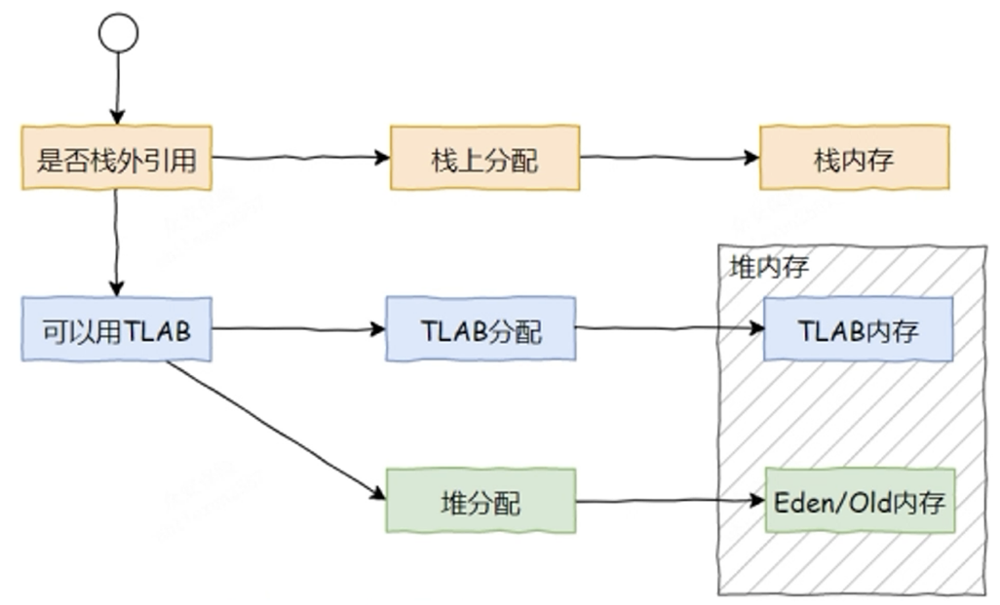

JVM-类加载和对象创建
21312312
类加载
类的生命周期
加载、链接（验证、准备、解析）、初始化、使用、卸载
- 加载
- 任务：通过类的全限定名查找字节码文件，将其二进制数据读入内存，并在方法区生成该类的元数据【运行时数据结构（如类元信息、常量池）】，同时在堆创建一个class对象作为访问入口
- 触发条件：类的首次主动使用（new、调用静态方法、访问静态字段、反射调用
Class.forName()等） - 关键：
- 类加载器负责加载过程，支持自定义加载逻辑（从网络、加密文件加载等）
- 被动引用不会触发加载，比如通过子类访问父类的静态字段，不会加载子类
- 链接：三个阶段，验证 → 准备 → 解析
- 验证：确保字节码符合JVM规范，防止恶意代码破坏虚拟机，如验证文件格式验证（魔数、版本号）、语义验证（语法、继承关系、final规则）、符号引用验证（确保后续解析能正确完成）
- 准备：为静态变量分配内存并设置初始值（0），final修饰的静态变量直接初始化
- 解析：将常量池的符号引用替换为直接引用
- 初始化：
- 任务：执行类构造器
<clinit>()方法（由编译器自动生成），完成类变量的赋值和静态代码块（static{}）的执行 - 触发条件：类的主动使用（同加载阶段），且必须保证父类已初始化
- 规则：
- JVM保证
<clinit>()方法的线程安全性（如多线程环境下初始化仅执行一次） - 被动引用不会触发初始化
- JVM保证
- 任务：执行类构造器
- 使用：
- 类初始化完成后进入可用状态，new对象实例、访问静态变量或方法、通过反射调用类的方法或构造器、作为父类被其子类初始化时触发初始化
- 卸载：
- 满足三个条件JVM会回收类的元数据及对应的class对象
- 该类的所有实例已经被垃圾回收
- 该类的Class对象没有被任何地方引用
- 加载该类的ClassLoader实例被回收
- 满足三个条件JVM会回收类的元数据及对应的class对象
被动引用比如说：
- 通过子类引用父类的静态字段（仅初始化父类）
- 通过数组定义引用类（如
MyClass[] arr = new MyClass[10];）- 访问类的
final static常量（常量值在编译期可确定时，视为“编译期常量”）
双亲委派模型
类加载器：启动类加载器、扩展类加载器、应用程序类加载器、自定义类加载器
双亲委派模型：如果一个类加载器收到了类加载的请求它首先不会自己去尝试加载这个类，而是把这个请求委派给父类加载器去完成，每一个层次的类加载器都是如此，因此所有的加载请求最终都应该传送到顶层的启动类加载器中，只有当父加载器反馈自己无法完成这个加载请求(它的搜索范围中没有找到所需的类)时，子加载器才会尝试自己去加载。
为什么使用双亲委派？
- 避免类重复加载：父加载器加载的类，子加载器无需重复加载
- 保证核心类库的安全性：如
java.lang.*只能由启动类加载器加载，防止被篡改
如何打破双亲委派机制？
重写ClassLoader的loadClass方法，loadClass方法的逻辑就是：先检查类是否被加载了，如果没有被加载那么就调用父类的loadClass方法，当父类加载器为空时使用启动类加载器作为父类加载器。如果父类加载失败，抛出ClassNotFoundException异常后，调用自己的findClass进行加载
经典案例就是Tomcat打破双亲委派机制
一个 Tomcat，是可以同时运行多个Web应用程序的，而不同的应用可能会同时依赖一些相同的类库，但是它们使用的版本可能是不同的，但这些类库中的Class的全路径名是一样的，如果都采用双亲委派的机制的话，是无法重复加载同一个类的。
所以在Tomcat中，每个应用都由一个独立的 WebappClassLoader (Tomcat自定义的类加载器) 进行加载，内部逻辑：针对私有类不遵循双亲委派，而是自己加载，即各自加载各自需要的类(版本不同，全类名相同)，即使全类名相同，JVM 也会视为不同类（因类加载器不同），所以不同Web应用程序中的类可以使用相同的类名
为了防止公共jar包被重复加载，Tomcat 给了个方案，那就是 SharedClassLoader，我们可以指定一个目录，让SharedClassLoader来加载，他加载的类在各个Web应用中都是可以共享使用的，避免重复加载，节省内存。
对象创建
标准过程
- 类加载检查：当使用new创建一个对象时，JVM会检查new指令的参数是否能在常量池中找到类的符号引用，并检查该符号引用代表的类是否已被加载、链接和初始化；如果没有要进行类的加载。
- 分配内存：类已经被加载，需要为对象分配内存（对象所需的内存大小在类加载完成后便可确定）。
- 分配方案：
- 指针碰撞：假设堆空间是绝对规整的，使用的内存放一边，未使用的内存放另一边，中间以指针作为分界点
- 空闲列表：假设堆空间不是规整的，此时JVM维护一个列表记录哪些内存可用，哪些内存不可用
- 分配内存还要保证线程安全，也就是如果一个线程给对象 A 分配了内存空间，但指针还没来得及修改，此时就可能出现另外一个线程使用原来的指针来给对象 B 分配内存空间的情况。
- 同步锁定，CAS配上失败重试方式保证更新操作的原子性
- 每个线程在Java堆中预分配一块内存，叫TLAB 本地线程分配缓冲
- 保证线程安全：线程在进行内存分配时优先使用TLAB ，当TLAB使用完成后，再向 Java 堆申请分配，此时 Java 堆采用同步锁定的方式来保证分配行为的线程安全
- 分配方案：
- 对象内存初始化：内存分配完成后，JVM将分配到的内存空间都初始化为零值（不包括对象头），比如数值类型的成员变量初始值是 0，布尔类型是 false，对象类型是 null。
- 设置对象头：包含了对象是哪个类的实例、对象的哈希码、对象的 GC 分代年龄、锁的类型等信息
- 执行init方法：上面的操作执行完JVM角度对象已经创建好了，但是从Java程序角度来看，对象的创建才刚开始，需要调用构造函数完成初始化操作
创建对象一定分配在堆里吗
-
逃逸分析和栈上分配
-
逃逸分析：JVM通过分析对象的动态作用域，判断对象是否可能逃逸出当前方法或线程：
-
未逃逸：对象仅在方法内部使用，不会被外部方法或线程访问
-
方法逃逸：对象作为返回值或参数传递到其他方法
-
线程逃逸：对象被其他线程访问（如赋值给静态变量）
-
-
栈上分配：如果对象未逃逸，JVM可能将其分配在栈帧中（跟随方法调用结束自动销毁），避免堆内存分配，减少GC压力。
-
-
如果本线程的TLAB区域未满，则优先将对象分配到TLAB
-
对象分配在堆中

TLAB
定义：TLAB 是 JVM 的一种内存分配的优化机制。用于提高多线程环境下，内存分配的效率。
问题引入：多线程同时new对象时，JVM为其分配内存，为了防止内存重复分配，需要加入互斥锁，降低了内存分配的速度。
解决方案：所以引入了TLAB的概念，Threal Local Allocate Buffer，是每个线程在Eden区专属的一块区域，当线程的TLAB区域未满时，可以直接在其中分配内存，不需要加锁，提高内存分配速度。
1 | |
TLAB 仅优化内存分配：TLAB 的线程安全仅体现在内存分配过程中，与对象本身的线程安全性无关